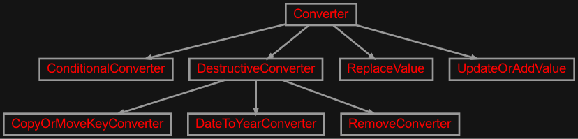
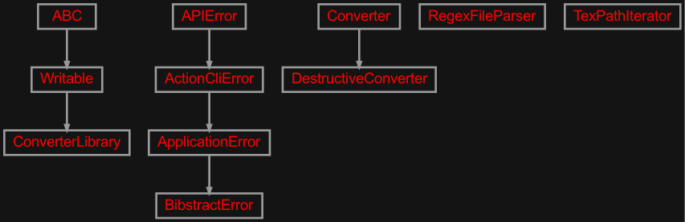
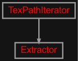
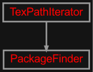

zensols.bibstract package#
Submodules#
zensols.bibstract.app#
This utility extracts Bib(La)Tex references (a.k.a markers) from a (La)Tex.
- class zensols.bibstract.app.Exporter(config_factory, converter_library, log_name)[source]#
Bases:
objectThis utility extracts Bib(La)Tex references from a (La)Tex.
- CLI_META = {'mnemonic_overrides': {'print_bibtex_ids': 'showbib', 'print_entry': 'entry', 'print_extracted_ids': 'showextract', 'print_texfile_refs': 'showtex'}, 'option_includes': {'inverse', 'libpath', 'no_extension', 'output', 'package_regex'}, 'option_overrides': {'no_extension': {'long_name': 'noext', 'short_name': None}, 'output': {'long_name': 'output', 'short_name': 'o'}, 'package_regex': {'long_name': 'filter', 'short_name': 'f'}}}#
- __init__(config_factory, converter_library, log_name)#
-
config_factory:
ConfigFactory# The configuration factory used to create this instance.
-
converter_library:
ConverterLibrary# The converter library used to print what’s available.
- package(texpath, libpath=None, package_regex=None, no_extension=False, inverse=False)[source]#
Return a list of all packages.
- Parameters:
texpath (
str) – a path separated (‘:’ on Linux) list of files or directories to exportlibpath (
str) – a path separated (‘:’ on Linux) list of files or directories of libraries to not include in resultspackage_regex (
str) – the regular expression used to filter packagesno_extension (
bool) – do not add the .sty extension
- print_entry(citation_key)[source]#
Print a single BibTex entry as it would be given in the output.
- Parameters:
citation_key (
str) – the citation key of entry to print out
zensols.bibstract.cli#

Command line entry point to the application.
- class zensols.bibstract.cli.ApplicationFactory(*args, **kwargs)[source]#
Bases:
ApplicationFactory
zensols.bibstract.converter#

A library of built in converters.
- class zensols.bibstract.converter.ConditionalConverter(name, config_factory, converters=<factory>, includes=<factory>, excludes=<factory>)[source]#
Bases:
ConverterA converter that invokes a list of other converters if a certain entry key/value pair matches.
- NAME = 'conditional_converter'#
- __init__(name, config_factory, converters=<factory>, includes=<factory>, excludes=<factory>)#
-
config_factory:
ConfigFactory# The configuration factory used to create this converter and used to get referenced converters.
-
excludes:
Dict[str,str]# The key/values that can not match in the entry to invoke the converters referenced by
converters.
-
includes:
Dict[str,str]# The key/values that must match in the entry to invoke the converters referenced by
converters.
- class zensols.bibstract.converter.CopyOrMoveKeyConverter(name, destructive=False, fields=<factory>)[source]#
Bases:
DestructiveConverterCopy or move one or more fields in the entry. This is useful when your bibliography style expects one key, but the output (i.e.BibLatex) outputs a different named field).
When :obj:
destructiveis set toTrue, this copy operation becomes a move.- NAME = 'copy'#
The name of the converter.
- __init__(name, destructive=False, fields=<factory>)#
- class zensols.bibstract.converter.DateToYearConverter(name, destructive=False, source_field='date', update_fields=('year',), format='%Y')[source]#
Bases:
DestructiveConverterConverts the year part of a date field to a year. This is useful when using Zotero’s Better Biblatex extension that produces BibLatex formats, but you need BibTex entries.
- NAME = 'date_year'#
The name of the converter.
- __init__(name, destructive=False, source_field='date', update_fields=('year',), format='%Y')#
-
format:
str= '%Y'# The
datetime.datetime.strftime()formatted time, which defaults to a four digit year.
- class zensols.bibstract.converter.RemoveConverter(name, destructive=False, keys=())[source]#
Bases:
DestructiveConverterRemove entries that match a regular expression.
- NAME = 'remove'#
The name of the converter.
- __init__(name, destructive=False, keys=())#
- class zensols.bibstract.converter.ReplaceValue(name, fields=<factory>)[source]#
Bases:
ConverterReplace values of entries by regular expression.
- NAME = 'replace'#
- __init__(name, fields=<factory>)#
zensols.bibstract.domain#

Domain and utility classes.
- exception zensols.bibstract.domain.BibstractError[source]#
Bases:
ApplicationErrorApplication level error.
- __module__ = 'zensols.bibstract.domain'#
- class zensols.bibstract.domain.Converter(name)[source]#
Bases:
objectA base class to convert fields of a BibTex entry (which is of type
dict) to another field.Subclasses should override
_convert().- ENTRY_TYPE = 'ENTRYTYPE'#
- __init__(name)#
- class zensols.bibstract.domain.ConverterLibrary(config_factory, converter_class_names, converter_names=None)[source]#
Bases:
Writable- __init__(config_factory, converter_class_names, converter_names=None)#
-
config_factory:
ConfigFactory# The configuration factory used to create the converters.
- write(depth=0, writer=<_io.TextIOWrapper name='<stdout>' mode='w' encoding='utf-8'>, markdown_depth=1)[source]#
Write the contents of this instance to
writerusing indentiondepth.- Parameters:
depth (
int) – the starting indentation depthwriter (
TextIOBase) – the writer to dump the content of this writable
- class zensols.bibstract.domain.DestructiveConverter(name, destructive=False)[source]#
Bases:
ConverterA converter that can optionally remove or modify entries.
- __init__(name, destructive=False)#
- class zensols.bibstract.domain.RegexFileParser(pattern=re.compile('\\\\\\\\cite\\\\{(.+?)\\\\}|\\\\{([a-zA-Z0-9, -]+?)\\\\}'), collector=<factory>)[source]#
Bases:
objectFinds all instances of the citation references in a file.
- MULTI_REF_REGEX = re.compile('[^,\\s]+')#
The regular expression used to find comma separated lists of citations commands (i.e.
\cite).
- REF_REGEX = re.compile('\\\\cite\\{(.+?)\\}|\\{([a-zA-Z0-9,-]+?)\\}')#
The default regular expression used to find citation references in sty and tex files (i.e.
\citecommands).
- __init__(pattern=re.compile('\\\\\\\\cite\\\\{(.+?)\\\\}|\\\\{([a-zA-Z0-9, -]+?)\\\\}'), collector=<factory>)#
zensols.bibstract.extractor#

Extract BibTex references from a Tex file and add them from a master BibTex file.
- class zensols.bibstract.extractor.Extractor(texpaths, converter_library, master_bib)[source]#
Bases:
TexPathIteratorExtracts references, parses the BibTex master source file, and extracts matching references from the LaTex file.
- __init__(texpaths, converter_library, master_bib)#
- property bibtex_ids: iter#
Return all BibTex string IDs. These could be BetterBibtex citation references.
-
converter_library:
ConverterLibrary# The converter library used to print what’s available.
- property database: BibDatabase#
Return the BibTex Python object representation of master file.
- extract(writer=<_io.TextIOWrapper name='<stdout>' mode='w' encoding='utf-8'>, extracted_entries=None)[source]#
Extract the master source BibTex matching citation references from the LaTex file(s) and write them to
writer.- Parameters:
writer (
TextIOWrapper) – the BibTex entry data sink
zensols.bibstract.pkg#

Find packages used in the tex path.
- class zensols.bibstract.pkg.PackageFinder(texpaths, package_regex=re.compile('.*'), library_dirs=None, inverse=False)[source]#
Bases:
TexPathIteratorFind packages used in the tex path.
- __init__(texpaths, package_regex=re.compile('.*'), library_dirs=None, inverse=False)#
-
inverse:
bool= False# Whether to invert the packages with all those packages found in
library_dirs.